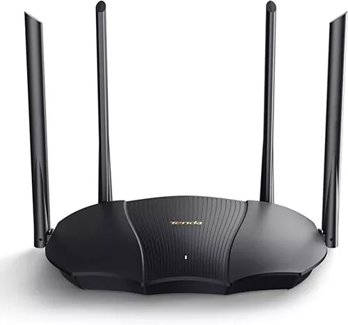
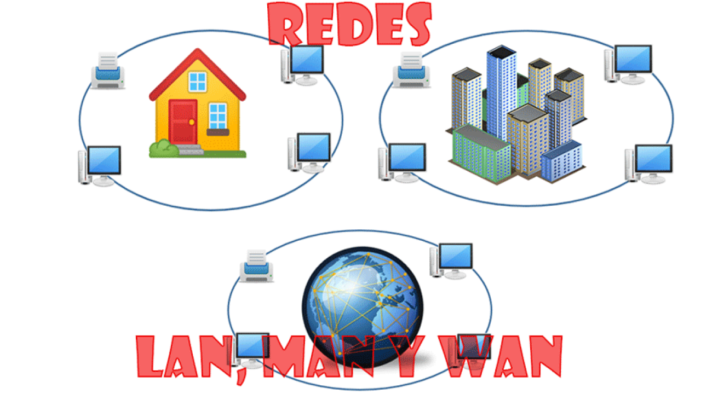
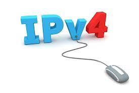
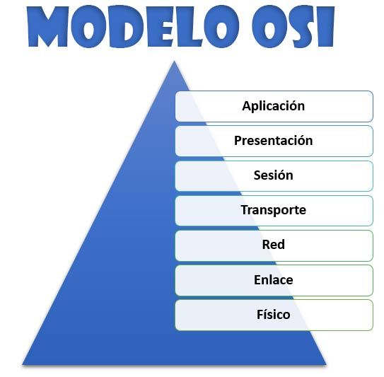
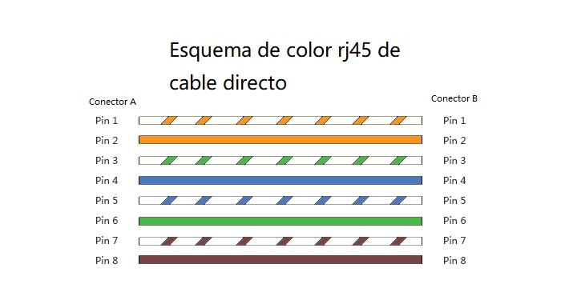

Un router es un dispositivo que conecta dos o más redes o subredes de conmutación de paquetes. Cumple dos funciones principales: gestionar el tráfico entre estas redes mediante el reenvío de paquetes de datos a sus direcciones IP previstas, y permite que varios dispositivos utilicen la misma conexión a Internet.
A continuación encontrarás las definiciones de las principales palabras y expresiones relacionadas con la asignatura de Sistemas Operativos
Enrutador
Redes informáticas
Tipos de redes: Red LAN: Una red de área local (LAN) es una red contenida dentro de una pequeña zona geográfica, normalmente dentro del mismo edificio. Red WAN: Es la tecnología que conecta entre sí a las oficinas, los centros de datos, las aplicaciones en la nube y el almacenamiento en la nube. Red MAN: Una red de área metropolitana (MAN) es una red informática que conecta los ordenadores de un área metropolitana, que puede ser una gran ciudad, varias ciudades y pueblos, o cualquier zona grande con varios edificios.
Protocolo TCP/IP
TCP/IP es un protocolo de enlace de datos que se usa en Internet para que los ordenadores y otros dispositivos envíen y reciban datos.

Protocolo IPv4
Es el nombre del protocolo de Internet utilizado actualmente para las direcciones IP de los dominios.
Modelo OSI
El modelo Open Systems Interconnection (OSI) es un modelo conceptual creado por la Organización Internacional para la Estandarización, el cual permite que diversos sistemas de comunicación se conecten usando protocolos estándar. En otras palabras, el OSI proporciona un estándar para que distintos sistemas de equipos puedan comunicarse entre sí.
Lenguaje de marcado de hipertexto HTML
Es el código que se utiliza para estructurar y desplegar una página web y sus contenidos.

Topologías de red
La topología de red física es la ubicación de diversos componentes de una red. Los diferentes conectores representan los cables de red físicos y los nodos representan los dispositivos de red físicos.

Estándares de cable de red RJ45
Como sabemos, los cables de red se componen de cuatro pares de cables, cada uno de los cuales consta de un cable de color sólido y una franja del mismo color. Para la red Ethernet 10/100BASE-T, solo se utilizan dos pares de cables (naranja y verde). Los otros dos pares de cables (de color marrón y azul) se utilizan para otra aplicación de red Ethernet o para conexiones telefónicas. La utilización de un cable directo o cruzado dependerá del tipo de conexión que se necesite. Para normalizar la disposición de cables, se utilizan dos estándares, el T568A y T568B, los cuales proporcionan esquemas de cableado para la terminación de los cables de red en enchufes, así como enchufes RJ45 de ocho posiciones.

Cable de red cruzado
Un cable de red cruzado es un tipo de cable Ethernet que se utiliza para conectar dispositivos de computación directamente. A diferencia de los cables de red directo, los cables cruzados utilizan dos estándares de cableado diferentes: un extremo usa el estándar de cableado T568A y el otro utiliza el estándar de cableado T568B (T568A a T568B).

Cable de red directo
Un cable de red directo es un tipo de cable de par trenzado que se usa en las redes de área local para conectar un ordenador a un núcleo de red como por ejemplo un enrutador. Este tipo de cable también se conoce como cable de conexión y es una alternativa a las conexiones inalámbricas donde uno o más ordenadores acceden a un enrutador a través de una señal inalámbrica. En un cable directo, los colores de cada par de cable coinciden. Para el cable de red directo se aplica solo un estándar de cableado:ambos extremos del cable deben tener la misma dirección: T568A a T568A o T568B a T568B.
